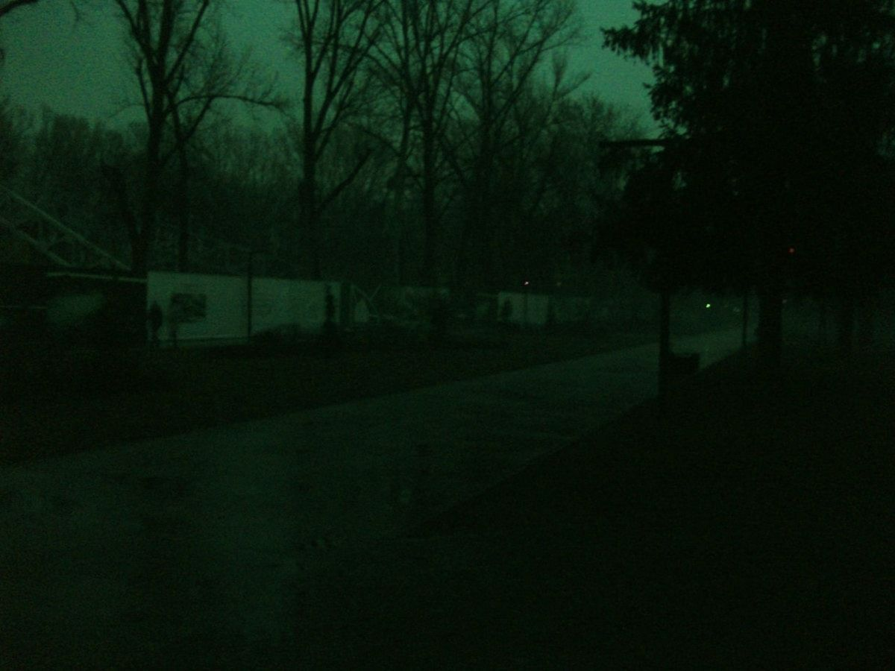
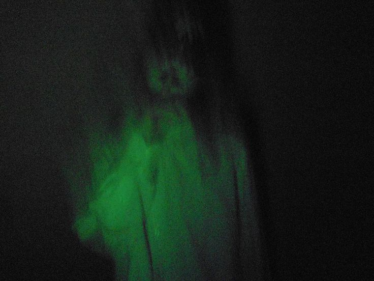
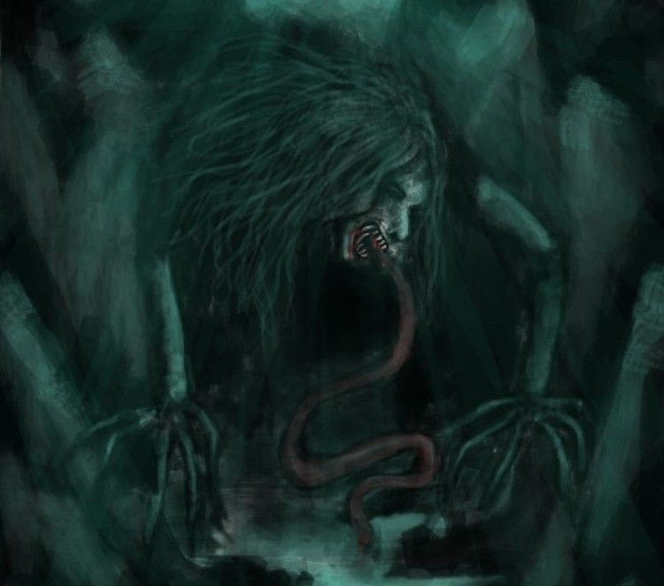

Long ago, in a secluded rural village, a woman known for her breathtaking beauty sought power. She delved into forbidden black magic, attempting a ritual beyond her control. The spell consumed her. As punishment for her arrogance, she was condemned to endlessly hunger for the flesh of the living.

To the untrained eye, she walks among humans, appearing entirely normal under the sunlight. She might be your neighbor, the woman sweeping her porch, or someone smiling at you in the market. But when the sun dips below the horizon, a horrifying transformation begins.

As midnight approaches, her head detaches from her body, tearing away with a sickening crack. It lifts off into the darkness, accompanied only by a tangle of dangling, blood-soaked organs. She drifts through the night, illuminated by an otherworldly, pulsing green light.
Her appetite is insatiable. She hunts for flesh, blood, and filth. Pregnant women and newborns are her prime targets. If you leave laundry hanging outside, she will wipe her filthy, blood-stained mouth on your clothes before dawn, spreading her curse.
